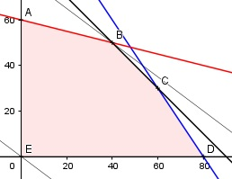

Aufgabe 91 Für die Geräte A und B werden auf 3 Automaten C, D und E Bauteile gefertigt. In der Matrix ist der Zeitaufwand für die Geräte pro Automat dargestellt. Automat Zeitaufwand in Minuten A B C 4,5 3 D 4 4 E 1,5 6 Die Automaten haben eine maximale Nutzzeit von 6 Stunden. Wieviel Geräte sollten hergestellt werden, wenn der Gewinn pro Gerät A 3 € und der von B 4 € beträgt und der Gesamtgewinn G maximal sein soll? x = Anzahl Gerät A y = Anzahl Gerät B Bedingungen: 6 h = 360 min 4,5x + 3y ≤ 360 4x + 4y ≤ 360 1,5x + 6y ≤ 360 x > 0 x ∈ ℕ y > 0 y ∈ ℕ Zielfunktion: G = 3x + 4y Randgerade 1: 4,5x + 3y = 360 Randgerade 2: 4x + 4y = 360 Randgerade 3: 1,5x + 6y = 360

Die Eckpunkte A, B, C, D und E bilden das Planungsgebiet, das alle Ungleichungen erfüllt. Eckpunkt B ist der Schnittpunkt der Randgeraden 1 und 3 4x + 4y = 360 (1) 1,5x + 6y = 360 (2) (1) * (-1,5) + (2) -6x - 6y = -540 1,5x + 6y = 360 ------------------- -4,5x = -180 |:4,5 x = 40 Eingesetzt in (1): 4 * 40 + 4y = 360 |-160 4y = 200 |:4 y = 50 B(40|50). Die Parallele der Zielfunktion durch B liegt am höchsten. Gmax = 3 * 40 + 4 * 50 = 320 € Es sollten 40 Geräte A und 50 Geräte B hergestellt werden, wenn der Gewinn G maximal sein soll.